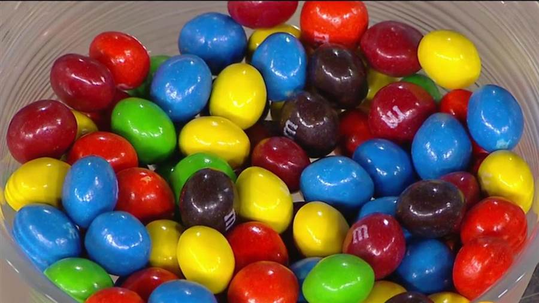
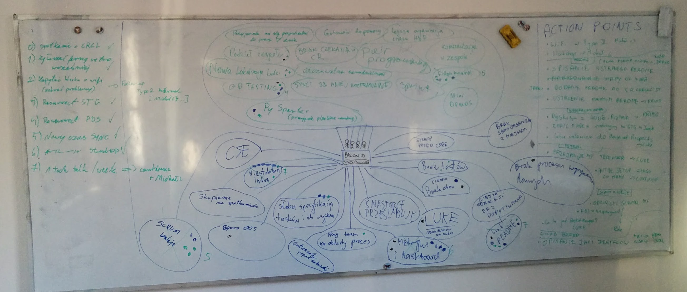
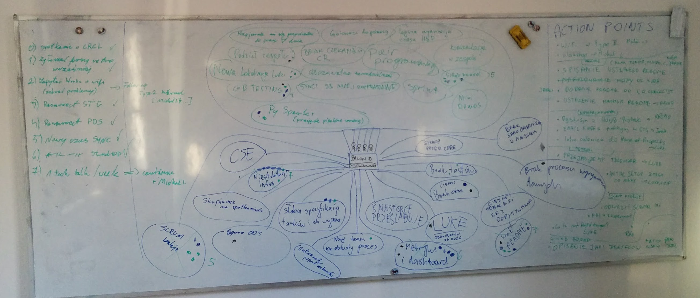
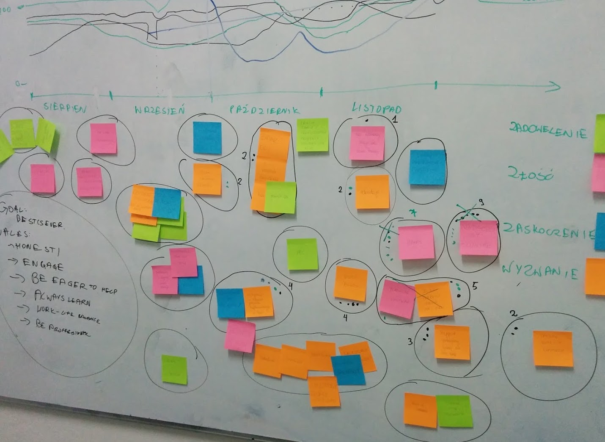
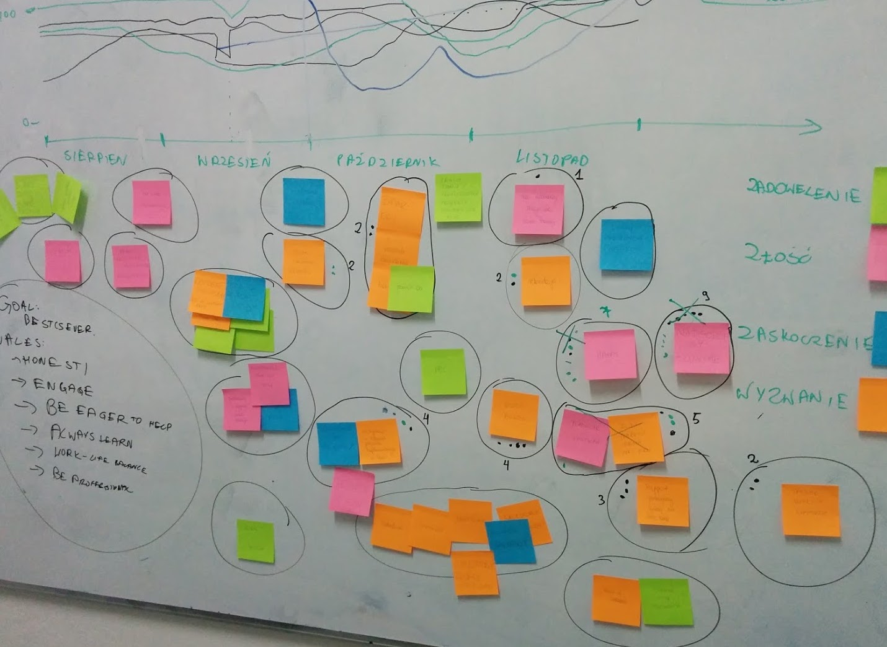
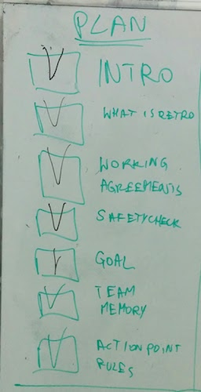
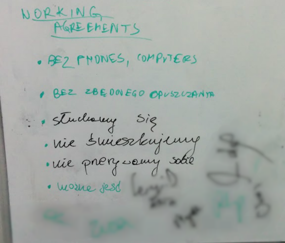

Retrospectives
How to make a good one ?
Created by Michał Lewandowski / @lewandm4
Hi, I'm Michał. I am ..
.. a software developer
.. a blogger at lewandowski.io
.. a community fan
Chapter 1
Why?
Why?
Good software?
“The physics of software is not algorithms, data structures, languages and abstractions.”
“The real physics of software is the physics of people.”By Pieter Hintjens
What can you lose?
Let's talk about you
How many of you?
Write code on a daily basis?
Have been in a retrospective?
Have led a retrospective?
Thinks to be go at it?
Retrospective
Team work
Engineering
Process
Team work
Before meeting
Talk!
Team work
Question
Write it down - paper, smartphone
What do you know about person you like to work with?
Hobby, Work, Family, Past
What do you know about person you
like
to work with?
What do you know about person you
don't like
to work with?
Team work
Conclusion
High correlation
Team work
Candy Love
Team work
Candy Love
- Yellow - life goal
- Green - book or movie
- Purple - one fact from history
- Red - leisure time
- Blue - ???
Engineering
API specification
Process
Only complaining?
Think positive
Process
Thing that you all don't like
“You have enemies? Good. That means you've stood up for something, sometime in your life.”By Winston Churchill
Chapter 2
Starters
Starters
Starter
Creating safety
- New team
- New environment
Starter
One word exercise
- Helps with openess
- Good for shy people
Chapter 3
Structure
Structure
Structure
Retrospective types
- Without topic
- With topic
Structure
Retrospective without topic
- Data collection and generating insights
- Selecting topic
- Setting action points
Data collection
Sticky notes
Sticky notes
Good, Bad, Change
- Worked well, Do it differently
- Hopes and concerns
- Smiley, Frowny
- Prouds, Sorries
Data collection
Sticky notes
Sticky notes
In practice...
- Big mess
- Round-robin
- Write it down on the white board
Data collection
Balloon

Balloon
Data collection
Boat
- Wind -> What gives us a speed?
- Anchor -> What slows us down?
- Direction -> How do we know it is Right thing to do?
Boat
- Wind -> What gives us a speed?
- Anchor -> What slows us down?
- Direction -> How do we know it is Right thing to do?
Data collection
Timeline

Timeline
Selecting topic
Dotmocracy
Dotmocracy
25% rule
Action points
Outcome
- Action points
- Rules
Outcome
- Action points
- Rules
Problem 1
Picnic instead of work
How to handle it?
Solution 1
4 minute rule
Solution 2
Dedicated meeting
Solution 3
Visual token
Topic retrospective
When to use?
- Specific problems
- Recurring problems
- No need for whole team
Topic retrospective
The goal
- open for discusion
- not blaming
Bad: How to convince management for faster Jenkins machines?
Better: What is wrong with our testing system?
Best: Find a way to improve CI.
Chapter 4
Leader
Leader
Leader
Tasks before retrospective
- Preparing activities
- Preparing agenda
- Setting up room
- Inviting everyone
Leader
Tasks during retrospective
- Making notes
- Keeping discussion up
- Timeboxing
- Summary
Leader
Tasks after retrospective
- Continuity
Leader
Feedback
1-2 minute feedback session
Leader
Checklist
Leader
Working agreement
Problem 2
How to handle lack of results?
Solution 1
Retrospective summary
Solution 2
Lack of time in the sprint
Solution 3
Repeat at daily
Solution 4
smartER?
E - Evaluate
R - Readjust
Solution 5
Not only action points. Define new rules.
Chapter 5
Details
Details
Scrum retrospective
- After sprint review
- 3 hours for one month sprint
- Improvements plan for the next sprint
Insights methods
5 whys
- Technical problems
Insights methods
Transforming communication
- I-messages (Observation, Feeling, Needs, Request)
- Reflective listening
Basics
Process of change
- Rejection of old
- Chaos
- Stabilization
- Integral part
The Party

The Party
Something good - do more
Something bad - do less
Basics
Retrospective coherence
- Easy to think about past
- Hard to predict future
- You can not clone good actions
- Multiple happy endings
Chapter 6
Summary
Summary
Motivation
1% Improvements
Every day 1% better \[\begin{aligned} 1.01^{365} & = 37.8\\ \end{aligned} \]
Workdays 1% better \[\begin{aligned} 1.01^{225} & = 9.4\\ \end{aligned} \]
Warren Buffett rule
Take offs
- Teamwork, engineering, process
- Candy Love
- Creating safety
- One word excercise
- Balloon and boat
- "Whiteboard" sticky notes
- Timeline
- Dotmocracy
- 4 minute
- smartER (evaluate and re-adjust)
- Retrospective checklist
- Quick feedback after
- 5 why's
- Transforming communication
“Try not! DO or DO NOT, There is not try.”Yoda
Bibliography
- Agile Retrospectives
- Funretrospectives.com
- Joseph Pelrine: Coaching "self-organising" teams
- Reasons why yous hould celebrate success
- Pieter Hintjens quote
- James Clear
- Writing S.M.A.R.T. Goals
- Is your agile software development truly agile?
- All the people with whom I spoke about retrospectives